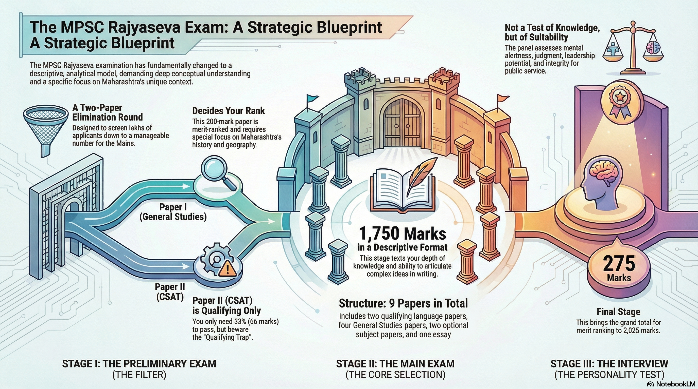

🏛️ The Definitive Guide to the MPSC Rajyaseva Examination
Pattern, Syllabus, Strategy, and Bureaucratic Mastery
The Maharashtra Public Service Commission (MPSC) Rajyaseva Examination has undergone a transformational shift from objective-based testing to a comprehensive, descriptive analytical model. This change aligns with the Union Public Service Commission (UPSC) Civil Services Examination and demands a different caliber of administrative officer.
Key Insight: The new MPSC pattern creates a unified preparation ecosystem where aspirants can simultaneously target both UPSC and MPSC without bifurcating their study strategies.
This comprehensive guide goes beyond syllabus listing to provide deep strategic analysis of every stage of the examination—from decoding the Maharashtra context in General Studies to mastering descriptive answer writing and navigating reservation rules.
📚 Navigation
🎯 The Renaissance of Maharashtra's Administrative Recruitment
The landscape of civil services in India is undergoing a profound transformation, and nowhere is this more evident than in Maharashtra. The MPSC has initiated a paradigm shift in its recruitment methodology for the State Service Examination (Rajyaseva).
This transition from an objective, fact-centric assessment to a comprehensive, descriptive analytical model marks a watershed moment in the history of state administration.
Why This Change Matters
For decades, MPSC Rajyaseva was viewed through the lens of factual retention—a test of memory where aspirants could succeed by rote-learning dates, names, and statutory provisions. However, modern administrative challenges of Maharashtra demand a different caliber of officer:
- Urban infrastructure crises in Mumbai and Pune
- Agrarian distress in Marathwada
- Tribal welfare needs in Gadchiroli
- Environmental management across diverse ecosystems
- Social equity and governance challenges
The state requires administrators who possess not just information, but the capacity to process it, wield power responsibly, and communicate policy effectively.
Dual Advantage of UPSC Alignment
- Elevated Standards: It elevates the standard of officers entering the state cadre.
- Unified Preparation: Creates a unified preparation ecosystem where aspirants can target both UPSC and MPSC simultaneously without bifurcating study strategies.
This alignment imposes rigorous demands for conceptual clarity, answer-writing proficiency, and nuanced understanding of Maharashtra's socio-economic fabric.

🔍 The Examination Architecture: A Structural and Strategic Analysis
The selection process is a three-tiered filtration mechanism, rigorously designed to test different facets of a candidate's suitability for bureaucratic service.
📝 Stage I: The Preliminary Examination (The Screen)
The Preliminary Examination is the great filter. With lakhs of applicants competing for a few hundred seats, its primary objective is elimination through rigorous testing.
Paper I: General Studies (The Decider)
Marks: 200 | Questions: 100 | Duration: 2 Hours
Nature: Merit-ranking | Syllabus: Current events, History, Geography, Polity, Economics, Environment, General Science
Strategic Analysis: Unlike UPSC Prelims, MPSC Prelims demands both conceptual clarity AND factual precision with specific Maharashtra weightage. Candidates must supplement national textbooks with state-specific resources.
Paper II: Civil Services Aptitude Test (CSAT)
Marks: 200 | Questions: 80 | Duration: 2 Hours
Nature: Qualifying (Minimum 33% or 66 Marks required)
⚠️ The Qualifying Trap: Neglecting CSAT is risky. With 1/4th negative marking, accuracy is crucial. Blind guessing can eliminate strong GS candidates. For a 2-mark question, 0.5 marks are deducted for wrong answers.
📋 Stage II: The Main Examination (The Core Selection)
The Main Examination is where real selection happens. The shift to a descriptive pattern is the most significant reform, raising standards dramatically.
Total Marks: 1750 | Papers: 9 | Each Paper Duration: 3 Hours
| Paper | Subject | Marks | Nature | Medium |
|---|---|---|---|---|
| 1 | Marathi | 300 | Qualifying (25%) | Marathi |
| 2 | English | 300 | Qualifying (25%) | English |
| 3 | Essay | 250 | Merit | Mar/Eng |
| 4 | General Studies I | 250 | Merit | Mar/Eng |
| 5 | General Studies II | 250 | Merit | Mar/Eng |
| 6 | General Studies III | 250 | Merit | Mar/Eng |
| 7 | General Studies IV | 250 | Merit | Mar/Eng |
| 8 | Optional I | 250 | Merit | Mar/Eng |
| 9 | Optional II | 250 | Merit | Mar/Eng |
🎯 Key Points
- Marathi & English are qualifying: Failure stops evaluation completely
- Ethics paper tests integrity and moral reasoning specific to Maharashtra governance
- Optional subjects reintroduced: 500 marks total (two papers × 250 marks each)
- Descriptive pattern demands: Conceptual clarity, structured writing, and analytical depth
🎤 Stage III: The Interview (Personality Test)
Marks: 275 | Total Examination Marks: 2025
The interview evaluates:
- Mental alertness and quick decision-making
- Judgment balance in complex situations
- Leadership potential and vision
- Moral integrity and ethical grounding
- Communication skills and articulation
📚 Comprehensive Syllabus Decoding: The "Maharashtra Context"
The critical differentiator of MPSC is its explicit Maharashtra weightage in General Studies papers. Success demands thorough understanding of the state's unique socio-economic fabric.
General Studies I: History and Geography
🏛️ History Focus
- Bhakti Movement: Jñaneshwar, Namdev, Tukaram, and their social impact
- Social Reformers of Maharashtra: Phule, Ambedkar, Ranade, Gokhale
- Freedom Struggle: Maharashtra's role, key figures, and movements
- Samyukta Maharashtra Movement: Integration and linguistic reorganization
- Medieval Period: Bahmani Kingdom, Adil Shahi Dynasty, Nizamshahi
- Maratha Empire: Rise, consolidation, and decline
🗺️ Geography Focus
- Physiographic Divisions: Western Ghats, Deccan Plateau, Konkan coastal plain
- River Systems: Godavari, Krishna, Tapi basins and their significance
- Rainfall Patterns: Monsoon dependency and regional variations
- Agriculture: Cropping patterns, productivity, and regional specialization
- Minerals and Resources: Coal, iron ore, limestone distribution
- Tribal Distribution: Geographical spread and livelihood patterns
General Studies II: Polity and Governance
- Maharashtra Legislature: Assembly composition, Speaker's role, legislative process
- Governor's Constitutional Role: Powers, limitations, and state-center relations
- Local Self-Government: Municipal corporations, municipal councils, nagar parishads
- Panchayat Raj Acts: Gram sabhas, gram panchayats, and grassroots democracy
- State Welfare Schemes: Healthcare, education, social security programs
- Reservation Framework: Vertical and horizontal reservations, implementation challenges
- Administrative Divisions: Districts, talukas, and governance structures
General Studies III: Economy and Disaster Management
💼 Economic Dimensions
- Maharashtra Economic Survey: State GDP, sectoral contributions, growth patterns
- Industrial Profile: Manufacturing hub status, sugar industry, petrochemicals
- Agricultural Crisis: Debt cycles, input costs, market accessibility
- Farmer Suicides: Regional trends, causes, and government interventions
- Marathwada Drought: Recurring phenomenon, agricultural impact, relief measures
- Vidarbha Regional Issues: Cotton cultivation, farmer welfare, development gaps
🌪️ Disaster Management
- Urban Flooding: Mumbai and Pune vulnerability, infrastructure challenges
- Landslides: Western Ghats instability, hill station hazards
- Cyclones: Coastal vulnerability, early warning systems
- Drought Management: Long-term and short-term strategies
- Disaster Response Framework: NDMA guidelines, state-level mechanisms
General Studies IV: Ethics and Governance
- Ethics Theory: Deontology, consequentialism, virtue ethics in bureaucratic context
- Case Studies with Maharashtra Context: Real-life administrative dilemmas
- Political Pressure Handling: Maintaining integrity under pressure
- Festival Management Ethics: Public resource allocation, communal harmony
- Drought Relief Dilemmas: Equitable distribution and corruption prevention
- Bureaucratic Accountability: Transparency, RTI, and public trust
🚀 Strategic Preparation: From Novice to Officer
Success in MPSC demands a structured, iterative approach with Maharashtra-centric understanding.
The Golden Loop of Success
Read → Revise → Write — This cycle, repeated consistently, transforms raw knowledge into examination excellence.
🎯 Core Strategy for Descriptive Answer Writing
IBC Structure: Introduction-Body-Conclusion
Introduction (10–15%): Hook the examiner, define the question scope
Body (70–80%): Substantive analysis with evidence and examples
Conclusion (10–15%): Synthesis and forward-looking insights
Structural Enhancements
- Use bullet points for clarity and visual appeal
- Employ subheadings to organize complex ideas
- Incorporate diagrams and flowcharts where applicable
- Reference Maharashtra-specific examples and data
- Demonstrate Maharashtra governance context understanding
✍️ Essay Writing: The Game Changer
Essays account for 250 marks and are critical for merit-building. Strategic essay writing can differentiate between selected and unselected candidates.
Essay Strategy Framework
- PESTLE Framework: Political, Economic, Social, Technological, Legal, Environmental dimensions
- Anecdotal Introductions: Open with compelling stories or examples
- Logical Flow and Transitions: Connect ideas seamlessly
- Maharashtra Examples: Integrate state-specific case studies
- Conclusion with Vision: End with actionable insights or policy recommendations
📖 Essential Resources
Curated Resources: Focus on quality over quantity. Supplement national resources with Maharashtra-specific materials including state reports, economic surveys, and governance documents.
Subject-Wise Reading Material
- History: Focus on Maharashtra's role in national movements and regional history
- Geography: State maps, river systems, climate patterns, and resource distribution
- Polity: Maharashtra Constitution provisions, local governance structures
- Economy: State economic surveys, agricultural statistics, industrial profile
- Ethics: Case studies specific to Maharashtra governance scenarios
- Essay: Current affairs with Maharashtra angle, policy analysis
🧩 CSAT Strategy: Mastering the Qualifying Hurdle
CSAT is qualifying (33% required), but its demands are unique. Success requires strategic time management and selective approach.
CSAT Mastery Techniques
⏱️ The 3-Minute Rule
Allocate approximately 1.5 minutes per question (80 questions × 120 minutes). Any question taking longer must be revisited only if time permits.
🎯 Elimination Technique
With 5 options, eliminate 2–3 clearly wrong answers first. This increases accuracy without requiring perfect knowledge.
⏭️ Skip Strategy
- Identify high-confidence areas and tackle them first
- Skip unfamiliar questions on first pass
- Return to skipped questions only if time permits
- Avoid blind guessing due to -0.5 marking
📊 High-Accuracy Areas
CSAT typically focuses on:
- Reading comprehension and reasoning
- Analytical and quantitative aptitude
- Logical sequencing and data interpretation
- Decision-making in situational scenarios
📋 Administrative Intelligence: Rules and Reservations
Understanding eligibility, reservation policies, and bureaucratic norms is crucial for strategic planning and informed decision-making.
✅ Eligibility Criteria (2025)
| Category | Age Limit | Attempts |
|---|---|---|
| General | 19–38 years | 6 attempts |
| OBC | 19–40 years | 9 attempts |
| SC/ST | 19–43 years | Unlimited |
| PwD | 19–45 years | Varies by category |
🛡️ Reservation Framework
Vertical Reservation
- SC (Scheduled Castes): 13% of total vacancies
- ST (Scheduled Tribes): 7% of total vacancies
- OBC (Other Backward Classes): 19% of total vacancies
- EWS (Economically Weaker Sections): 10% of total vacancies
Horizontal Reservation
- Women: 30% across all categories
- Orphans: 1% of total posts
- Sportspersons: 5% of total posts
- People with Disabilities (PwD): 4% across all categories
⚠️ Important: Horizontal reservations are superimposed on vertical categories. For example, a woman SC candidate benefits from both women and SC reservations.
🗳️ Selection Dynamics
- Merit-based selection within each category
- Separate merit lists for General, SC, ST, OBC, and EWS
- Women candidates can compete with men or opt for women-only lists
- Final appointment follows constitutional provisions and statutory guidelines
📖 Optional Subject Strategy
The reintroduction of optional subjects (500 marks total) makes strategic selection crucial. Your choice can significantly impact your final score.
📊 Evaluation Criteria for Optional Selection
1. Academic Background
Choose a subject you've studied at undergraduate or postgraduate level. Prior knowledge provides a strong foundation for quick learning.
2. GS Overlap
Subjects with significant overlap with GS (History, Geography, Political Science, Public Administration) allow for synergistic preparation and revision.
3. Scoring Potential
Research previous years' cutoffs. Some optionals consistently see higher average scores due to better answer key framing and generous marking.
4. Availability of Resources
Ensure quality books, coaching materials, and experienced guidance are available for your chosen subject.
🎯 Recommended Optionals for MPSC
- History: High GS overlap, Maharashtra-centric content, good scoring potential
- Geography: Direct GS connection, state-specific focus, structured syllabus
- Political Science & IR: Polity connection, governance focus, relevant to bureaucratic role
- Public Administration: Directly relevant to civil service, governance frameworks, ethics
- Economics: GS connection, state economic survey focus, analytical depth
🎤 Interview Preparation: The Final Hurdle
The interview accounts for 275 marks. A well-prepared interview can significantly enhance your chances of selection.
📄 Detailed Application Form (DAF) Focus
Interviewers meticulously study your DAF. Be prepared to elaborate on:
- Personal Background: Name, family background, values, upbringing
- Native District: Geography, economy, current issues, development challenges
- Educational Journey: Subject choices, academic achievements, why you chose each stream
- Hobbies and Interests: How they reflect your character and suitability for bureaucracy
- Professional Experience: Lessons learned, challenges overcome, growth trajectory
💡 Opinion-Based Questions Strategy
Framework for Balanced Responses
- Constitutional Grounding: Base opinions on constitutional provisions and democratic principles
- Evidence-Based Reasoning: Support views with facts, data, and examples
- Acknowledgment of Complexity: Recognize multiple perspectives; avoid dogmatism
- Non-Radical Positioning: Maintain mainstream governance perspective
- Maharashtra Context: Connect opinions to state-specific governance scenarios
Example Interview Scenarios
- Farmer Crisis: How would you balance farmer welfare with fiscal constraints?
- Urban-Rural Divide: Strategies to address regional inequality in Maharashtra?
- Communal Tensions: How would you maintain peace while upholding constitutional principles?
- Ethical Dilemmas: Handling political pressure to compromise administrative integrity?
🎬 Interview Do's and Don'ts
DO: Listen carefully, think before responding, speak with conviction, maintain eye contact, demonstrate Maharashtra knowledge, connect personal values to bureaucratic ethics
DON'T: Rush answers, contradict your DAF, appear prejudiced, criticize government policies harshly, lack knowledge of your home district
🎯 Your Roadmap to Success: From Preparation to Mantralaya
Success in MPSC is not a matter of luck but strategic, consistent, and Maharashtra-focused preparation. Here's your action-oriented timeline.
📅 12-Month Preparation Timeline
Months 1–3: Foundation Building
- Master the MPSC syllabus thoroughly
- Build foundational knowledge in all GS papers
- Develop understanding of Maharashtra's unique context
- Start mock tests for CSAT qualifications
- Focus on reading quality materials, not quantity
Months 4–8: Mains Focus and Depth
- Practice descriptive answer writing regularly
- Study optional subject with depth
- Develop Marathi and English language skills
- Write full-length mains papers weekly
- Incorporate Maharashtra-specific examples and case studies
Months 9–11: Prelims Mode and Integration
- Shift focus to Prelims pattern and speed
- Practice GS accuracy and CSAT strategy
- Continue mains practice (reduced frequency)
- Refine essay writing with recent current affairs
- Take full-length prelims mock tests regularly
Month 12: Final Polish and Psychological Preparation
- Intensive mock test series
- Analysis of weak areas and targeted revision
- Mental preparation for examination pressure
- Fine-tune time management strategies
- Maintain confidence and consistency
Post-Prelims Phase: If you clear Prelims, dedicate 2–3 months to focused Mains preparation with intensive answer writing practice, then transition to interview-specific preparation with DAF-based mock interviews and attitude refinement.
🏆 Success Mantras
- Consistency Over Intensity: Sustainable daily effort beats sporadic marathon sessions
- Maharashtra Mastery: Deep understanding of state context is your competitive advantage
- Adaptation and Flexibility: MPSC patterns evolve; stay updated with official notifications
- Ethical Foundation: Develop a strong ethical compass; bureaucracy demands integrity above all
- Vision Beyond Selection: Prepare not just to pass the exam, but to become an effective administrator
💪 Final Message
The MPSC Rajyaseva Examination is not just a test of knowledge; it is a test of your character, determination, and vision for Maharashtra's development. With strategic preparation, Maharashtra-centric focus, and ethical grounding, success is within reach. The state needs administrators who can transform governance, enhance public service, and contribute meaningfully to Maharashtra's progress.
Your journey to Mantralaya begins today. Embrace the process, trust the preparation, and emerge victorious.